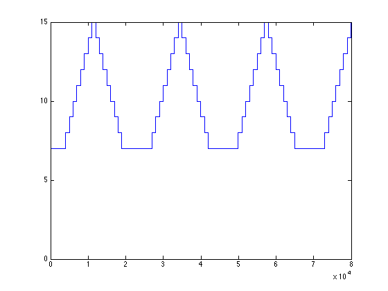
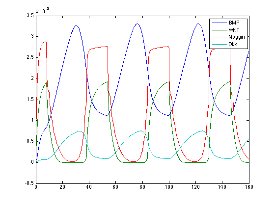

function fol1d3
clc
close all
N=20;
x=linspace (0,1,N);
u=zeros(N,1);
n=7;
u(1)=0.0005;
u(n)=0.0001;
v=u;
w=v;
y=w;
M=80000;
M2=M;
dt=0.002;
U=zeros(N,M);
V=U;
W=V;
Y=W;
R1=U;
R2=R1;
t=0:dt:dt*(M2-1);
flag=0;
counter=1000;
toplot=ones(1,M);
for i= 2: M,
[gu,gv,gw,gy]=gen(u,v, w, y,n);
[U(:,i),R1(:,i)]=step(u,w,dt,5,gu,N,0.002,0.4,0.1);
W(:,i)=step(w,u,dt,n,gw,N,0.003,0.4,0.1);
[V(:,i),R2(:,i)]=step(v,y,dt,n,gv,N,0.0005,0.6,0.1);
Y(:,i)=step(y,v,dt,5,gy,N,0.002,0.6,0.1);
u=U(:,i);
w=W(:,i);
v=V(:,i);
y=Y(:,i);
toplot(i)=n;
[n,flag,counter]=nextn(u,v,n,flag,counter);
end
figure
plot(toplot)
figure
plot(t,U(7,:),t,V(7,:),t,W(7,:),t,Y(7,:));
legend('BMP','WNT','Noggin','Dkk')
fig1=figure;
plot(x,U(:,i),x,V(:,i),x,W(:,i),x,Y(:,i),x,R1(:,i),x,R2(:,i))
legend('BMP','wnt','Noggin','Dkk','Reaction 1','Reaction 2')
windowsize=get(fig1,'Position');
windowsize(1:2)=[0,0];
Movie=moviein(100,fig1,windowsize);
Movie(:,1)=getframe(fig1,windowsize);
frame=2;
results=zeros(2,100);
results(:,1)=[0.001 ; 0.001];
j=2;
for i=101:M/100:M,
results(1,j)=u(toplot(j));
results(2,j)=v(toplot(j));
plot(x,U(:,i),x,V(:,i),x,W(:,i),x,Y(:,i),x,R1(:,i),x,R2(:,i))
legend('BMP','wnt','Noggin','Dkk','Reaction 1','Reaction 2')
Movie(:,frame)=getframe(fig1,windowsize);
frame=frame+1;
j=j+1;
end
size(t)
size(toplot)
size(results)
movie(fig1, Movie, 100,3,windowsize);
return
function [gu,gv,gw,gy]=gen (u,v,w,y,n)
gu=0.05*u(n)^2/(1+u(n)^2)+0.005;
gw=0.02*w(n)^2/(1+w(n)^2)+0.004;
gv=0.005*v(n)^2/(1+v(n)^2)+0.001;
gy=0.01*y(n)^2/(1+y(n)^2)+0.001;
return
function [u,R]=step(u,w,dt,n,gu,N,ds,rs,des)
dx=1/N;
D=-2*eye(N,N)+diag(diag(eye(N-1,N-1)),1)+diag(diag(eye(N-1,N-1)),-1);
D(1,1)=-1;
D(1,2)=1;
D(N-1,N-1)=-1;
D(N,N)=0;
D(N,N-1)=-1;
D(N,N-2)=1;
D=D*ds;
F=zeros(N,1);
F(n)=gu;
I=eye(N,N);
R=-rs*sqrt((w).*u)-des*u;
u =(I-(dt/dx^2)*D)\(u+dt*F+R*dt);
return
ans =
1 80000
ans =
1 80000
ans =
2 101
 